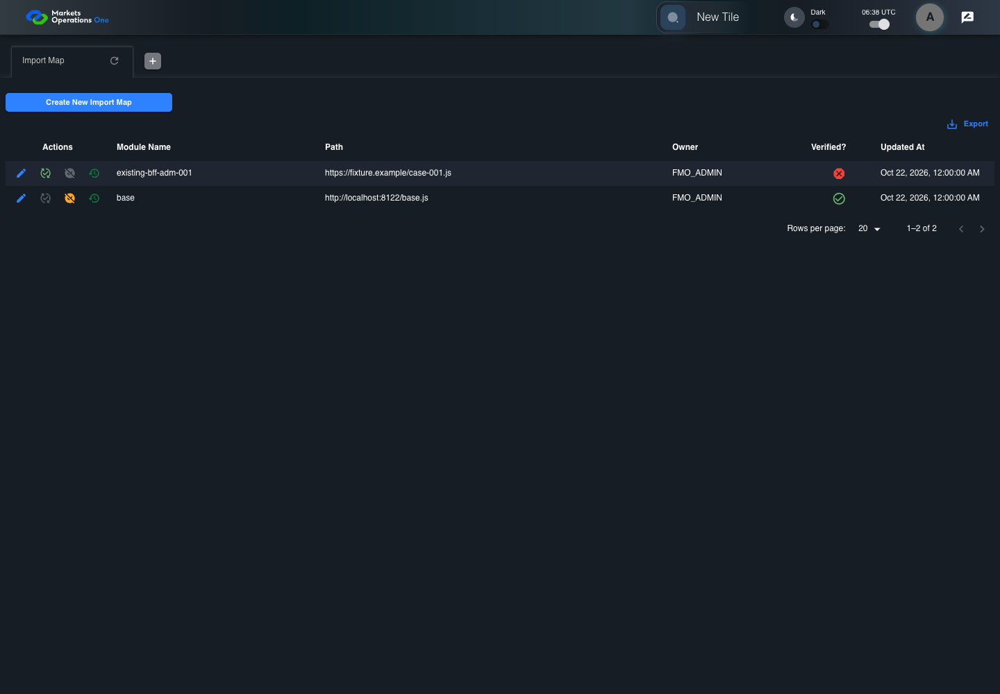
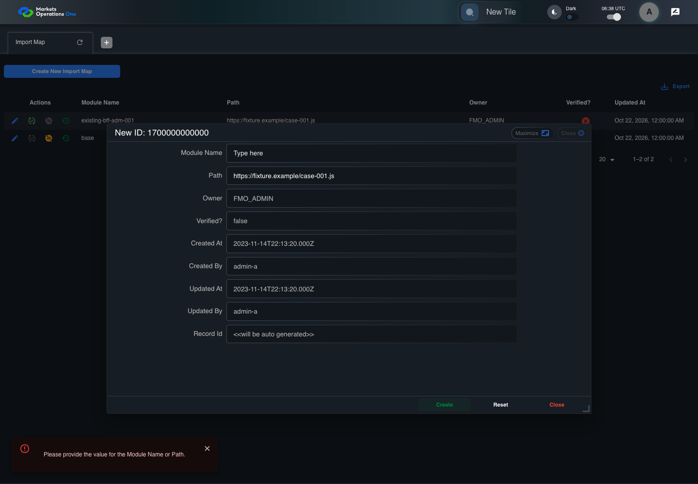

BFF-ADM-001 current BFF administration through actual UI
PASS · application/run-072/bff-adm-001-current-bff-administration-through-actual-ui-cd4912badbe0-attempt-1 · ACTUAL_APPLICATION_LOCAL_SERVICES
Actual current React and exact-current BFF admin controllers/services/JPA with actual migration DDL in disposable PostgreSQL. Controlled OUD/EMS2 identities and local Spring bootstrap. Fixture SQL seeds/mutates isolated records; service errors are actual database errors. Undefined agreed messages remain unresolved acceptance.
2026-10-22T06:38:31.277Z to 2026-10-22T06:38:35.845Z
Assertions and result · Artifact manifest · Exact run inputs and source hashes
Result SHA-256:bc98fb716a578224efca91acdfc4d35b79b2929915d88694f84abc6a566c3fbeMachine observations
- actual-identity-projection.json
14ee381f08e972706a247ce724683b641aaa336c27ba2784ed5bc99fe6169afb - baseline-inputs.json
e7f840bd5555b492ef2c41c9a4748eac7f4fd2ea5c9772b03fb03c05cdff9bd3 - bff-boundary.json
7a2ddab7f567cfebd17737e1dc49d1999856fb4bfd6ab08f22529943f40da986 - committed-ui-submission-comparisons.json
3377e88b3f82f8fea6e098839cf1753fbabb0aecc2eb77dd710ff3f4f89f0837 - creation-clock.json
90bc7e5162c45f70479d6cc929318f1d8ca72939579651f3d9d7734736cb877f - fixture-step-4.json
21784f1b22ad3c8bb627280f7ccc4b3e20648ca34be326015f348aa709c1c98d - fixture-step-5.json
f95ea4cc576760adb83b4ba0b626cf183920ee51ea2e4a0e26ad727e97df3b59 - initial-persisted-records.json
beaf053e7d877bae00dc48924d062a87d06923e2d8d08c527afd244cd94dd4e3 - persisted-after-submit.json
f826243676c75e86ef01c3b3d94fd3389b2f8c4c1ceecab4127a0a77cd679bd5 - ui-origin-bff-requests.json
4a852c074a4eca0b4a2c1e90417e83e6f8b5ee59d35604e9f237c0c7c5ecb7a0
Screenshot capture: CAPTURED. Named frames: 14.
Step screenshot bindings: COMPLETE. 13/13 canonical steps have execution screenshots.
Bindings measure structural coverage only. They do not establish screenshot content quality or relevance.
Screenshot content review: NOT_REVIEWED. Recorded context: 0/14 frames. Identical image bytes: 6 repeated frames. Recorded context does not establish human visual review.
Canonical step timeline
Given Admin A uses subject "admin-a" with role "FMO_ADMIN" in an isolated authenticated browser
Execution: PASSED.1. step-01 Visible state after step 1: Given Admin A uses subject "admin-a" with role "FMO_ADMIN" in an isolated authenticated browser
2026-10-22T06:38:33.691Z · 1440×1000
Step: /Users/lushevol/code/github/ratan-release-impact/workbench/tasks/ui-test-coverage-20261022/test-cases.md:14654
SHA-256:b521d906fdb0abeeab469211183918e557c9e4cab1487aeb89fb59b4fce321acAnd the controlled Import Map fixture records the initial grid rows and persisted values
Execution: PASSED.
2. step-02 Visible state after step 2: And the controlled Import Map fixture records the initial grid rows and persisted values
2026-10-22T06:38:33.812Z · 1440×1000
Step: /Users/lushevol/code/github/ratan-release-impact/workbench/tasks/ui-test-coverage-20261022/test-cases.md:14655
SHA-256:b521d906fdb0abeeab469211183918e557c9e4cab1487aeb89fb59b4fce321acImage bytes match frame 1. An unchanged image can be valid for consecutive assertions. This match does not establish correct step content.
And the controlled creation clock returns 1700000000000 milliseconds
Execution: PASSED.
3. step-03 Visible state after step 3: And the controlled creation clock returns 1700000000000 milliseconds
2026-10-22T06:38:33.839Z · 1440×1000
Step: /Users/lushevol/code/github/ratan-release-impact/workbench/tasks/ui-test-coverage-20261022/test-cases.md:14656
SHA-256:fc4c77076e929fca040a19c885c73300aeb2fdfb9a8b26880d9475e2fdc191f8And the baseline fixture data defines "Module Name" as "container-001"
Execution: PASSED.
4. step-04 Visible state after step 4: And the baseline fixture data defines "Module Name" as "container-001"
2026-10-22T06:38:33.877Z · 1440×1000
Step: /Users/lushevol/code/github/ratan-release-impact/workbench/tasks/ui-test-coverage-20261022/test-cases.md:14657
SHA-256:b521d906fdb0abeeab469211183918e557c9e4cab1487aeb89fb59b4fce321acImage bytes match frame 2. An unchanged image can be valid for consecutive assertions. This match does not establish correct step content.
And the baseline fixture data defines "Path" as "https://fixture.example/case-001.js"
Execution: PASSED.
5. step-05 Visible state after step 5: And the baseline fixture data defines "Path" as "https://fixture.example/case-001.js"
2026-10-22T06:38:33.913Z · 1440×1000
Step: /Users/lushevol/code/github/ratan-release-impact/workbench/tasks/ui-test-coverage-20261022/test-cases.md:14658
SHA-256:fc4c77076e929fca040a19c885c73300aeb2fdfb9a8b26880d9475e2fdc191f8Image bytes match frame 3. An unchanged image can be valid for consecutive assertions. This match does not establish correct step content.
When Admin A clicks the button labeled "Create New Import Map" on the Import Map administration page
Execution: PASSED.6. step-06 Visible state after step 6: When Admin A clicks the button labeled "Create New Import Map" on the Import Map administration page
2026-10-22T06:38:34.101Z · 1440×1000
Step: /Users/lushevol/code/github/ratan-release-impact/workbench/tasks/ui-test-coverage-20261022/test-cases.md:14659
SHA-256:7f27d0490443dbc208b493ad1cf4de2b9664437a048e601b90b186ba47947853Then the dialog titled "new ID: 1700000000000" is visible on the Import Map administration page
Execution: PASSED.7. step-07 Visible state after step 7: Then the dialog titled "new ID: 1700000000000" is visible on the Import Map administration page
2026-10-22T06:38:34.167Z · 1440×1000
Step: /Users/lushevol/code/github/ratan-release-impact/workbench/tasks/ui-test-coverage-20261022/test-cases.md:14660
SHA-256:f7c5ce123551661db6eba1e7494ca1533f886c8aad6b9e5cc69b24b2dddc6e56When Admin A fills the textbox labeled "Module Name" with "" in dialog "new ID: 1700000000000"
Execution: PASSED.8. step-08 Visible state after step 8: When Admin A fills the textbox labeled "Module Name" with "" in dialog "new ID: 1700000000000"
2026-10-22T06:38:34.587Z · 1440×1000
Step: /Users/lushevol/code/github/ratan-release-impact/workbench/tasks/ui-test-coverage-20261022/test-cases.md:14661
SHA-256:eb2ae0f1676a103882ef68d8861fdddd4470f7c0f8da0b5a3c108cb45e5c876aAnd Admin A fills the textbox labeled "Path" with "https://fixture.example/case-001.js" in dialog "new ID: 1700000000000"
Execution: PASSED.9. step-09 Visible state after step 9: And Admin A fills the textbox labeled "Path" with "https://fixture.example/case-001.js" in dialog "new ID: 1700000000000"
2026-10-22T06:38:35.008Z · 1440×1000
Step: /Users/lushevol/code/github/ratan-release-impact/workbench/tasks/ui-test-coverage-20261022/test-cases.md:14662
SHA-256:2e9c4657e2383ae88892d5722bbf245802083a832ddba469f51426c452ebffd6And Admin A clicks the button labeled "Create" in dialog "new ID: 1700000000000"
Execution: PASSED.
10. step-10 Visible state after step 10: And Admin A clicks the button labeled "Create" in dialog "new ID: 1700000000000"
2026-10-22T06:38:35.253Z · 1440×1000
Step: /Users/lushevol/code/github/ratan-release-impact/workbench/tasks/ui-test-coverage-20261022/test-cases.md:14663
SHA-256:543a115c663e702fac5e0d9674ba8e01e3b7d660f32998736b03b72fbf19c1adThen the dialog titled "new ID: 1700000000000" remains visible on the Import Map administration page
Execution: PASSED.
11. step-11 Visible state after step 11: Then the dialog titled "new ID: 1700000000000" remains visible on the Import Map administration page
2026-10-22T06:38:35.323Z · 1440×1000
Step: /Users/lushevol/code/github/ratan-release-impact/workbench/tasks/ui-test-coverage-20261022/test-cases.md:14664
SHA-256:ea41cff9d22a634028222aaba2ef14f39fde51f12cc9f791ea03246211cec7e4And the alert with severity "error" in the portal snackbar contains the exact text "Please provide the value for the Module Name or Path."
Execution: PASSED.
12. step-12 Visible state after step 12: And the alert with severity "error" in the portal snackbar contains the exact text "Please provide the value for the Module Name or Path."
2026-10-22T06:38:35.404Z · 1440×1000
Step: /Users/lushevol/code/github/ratan-release-impact/workbench/tasks/ui-test-coverage-20261022/test-cases.md:14665
SHA-256:ea41cff9d22a634028222aaba2ef14f39fde51f12cc9f791ea03246211cec7e4Image bytes match frame 11. An unchanged image can be valid for consecutive assertions. This match does not establish correct step content.
And the Import Map data grid with column "Record Id" row identifiers and loaded field values equal the initial grid snapshot on the Import Map administration page
Execution: PASSED.
13. step-13 Visible state after step 13: And the Import Map data grid with column "Record Id" row identifiers and loaded field values equal the initial grid snapshot on the Import Map administration page
2026-10-22T06:38:35.511Z · 1440×1000
Step: /Users/lushevol/code/github/ratan-release-impact/workbench/tasks/ui-test-coverage-20261022/test-cases.md:14666
SHA-256:ea41cff9d22a634028222aaba2ef14f39fde51f12cc9f791ea03246211cec7e4Image bytes match frame 12. An unchanged image can be valid for consecutive assertions. This match does not establish correct step content.
Additional named frames
The final visible state after the named test assertions.
2026-10-22T06:38:35.583Z · 1440×1000Step: Test source: /Users/lushevol/code/github/ratan-release-impact/workbench/e2e/audit-specs/bff-admin.spec.ts:11
SHA-256:
ea41cff9d22a634028222aaba2ef14f39fde51f12cc9f791ea03246211cec7e4Image bytes match frame 13. An unchanged image can be valid for consecutive assertions. This match does not establish correct step content.
Screenshots establish visible state only. Assertions and traces support functional claims.